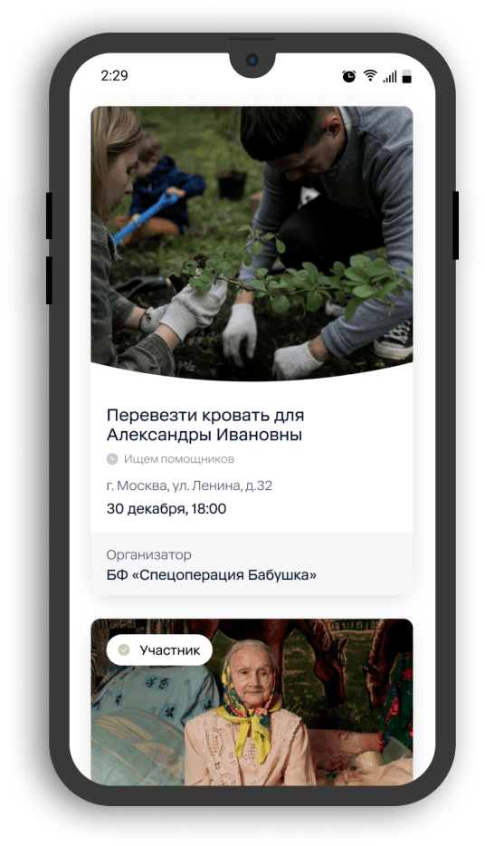

Профайлы фондов
Мы сделали отображение фондов ещё прозрачнее. Кликнув на иконку того или иного фонда на карте, пользователю предоставляется информация со всеми актуальными и завершенными делами.

Подтверждение участия в помощи по QR-коду
Волонтёр выбирает из списка дело и отправляет заявку на участие. Её рассматривает и подтверждает организатор из фонда. При оказании помощи участник получает от организатора QR-код, после сканирования которого в приложении подтверждается опыт волонтёра.
